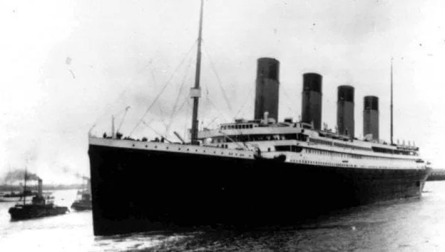
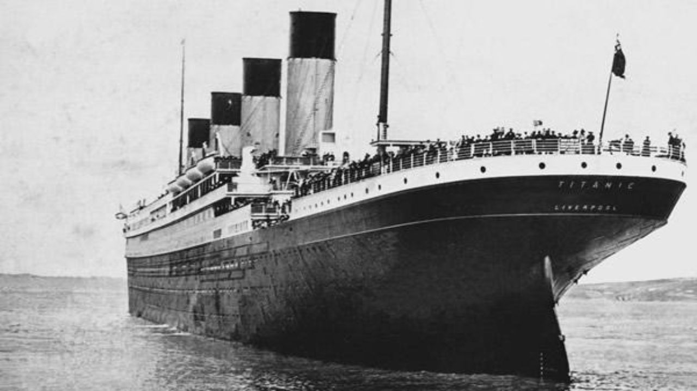
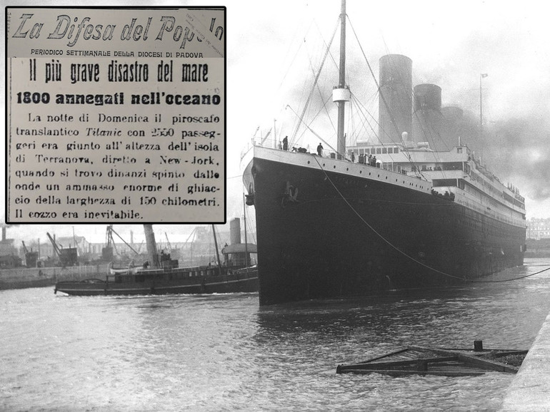
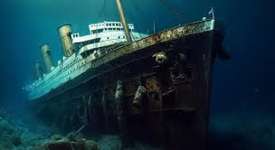
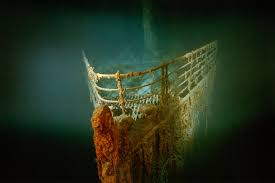

Il Titanic era un transatlantico britannico appartenente alla compagnia navale White Star Line. Considerato il più grande e lussuoso della sua epoca, fu costruito nei cantieri navali di Harland and Wolff a Belfast, in Irlanda del Nord. Il Titanic era noto per le sue dimensioni imponenti e le avanzate tecnologie di sicurezza, che lo facevano ritenere "inaffondabile". Tuttavia, durante il suo viaggio inaugurale da Southampton a New York, il 14 aprile 1912, colpì un iceberg e affondò nelle prime ore del 15 aprile. La tragedia causò la morte di oltre 1.500 persone, diventando uno dei disastri marittimi più famosi della storia.
 



La storia del Titanic inizia con la sua costruzione nei cantieri navali Harland and Wolff di Belfast, iniziata nel marzo 1909.
Il inaugurazione del Titanic avvenne il 31 maggio 1911, e il suo allestimento interno continuò fino all'inizio del 1912. Dotato di strutture all'avanguardia per l'epoca, come una piscina, palestre, eleganti sale da pranzo e cabine di prima classe arredate con lusso.
Il 10 aprile 1912, il Titanic partì per il suo viaggio inaugurale da Southampton, in Inghilterra, diretto a New York, con soste a Cherbourg, in Francia, e a Queenstown (oggi Cobh), in Irlanda. A bordo c'erano circa 2.224 persone, tra passeggeri ed equipaggio, appartenenti a diverse classi sociali, dai ricchi industriali e aristocratici ai migranti in cerca di una nuova vita in America.
La notte del 14 aprile 1912, mentre navigava nell'Atlantico settentrionale, il Titanic ricevette diverse segnalazioni di iceberg nella zona. Nonostante le avvertenze, la nave proseguì a velocità elevata. Alle 23:40, un iceberg venne avvistato troppo tardi per evitare l'impatto, e la nave lo colpì sul lato destro, causando danni fatali allo scafo. Nonostante fosse equipaggiato con 20 scialuppe di salvataggio (quasto perche alcuni passegieri si erano lamentati del fatto che le scialuppe ostacolavano la vista), sufficienti per solo la metà delle persone a bordo, il Titanic non aveva abbastanza mezzi di salvataggio per tutti. L'evacuazione fu caotica e disorganizzata, con molte scialuppe lanciate in mare parzialmente vuote. La nave affondò nelle prime ore del 15 aprile, spezzandosi in due prima di scomparire sotto le onde. Il disastro provocò la morte di oltre 1.500 persone, mentre circa 710 sopravvissuti furono salvati dal RMS Carpathia e portati a New York.
Il naufragio del Titanic ebbe un impatto profondo sull'opinione pubblica e portò a significative riforme nelle normative sulla sicurezza marittima. Tra queste, l'istituzione della Convenzione Internazionale per la Salvaguardia della Vita Umana in Mare (SOLAS) e l'adozione di regole più severe sulla dotazione di scialuppe di salvataggio e la formazione dell'equipaggio.
Il relitto del Titanic fu ritrovato nel 1985 da una spedizione guidata da Robert Ballard, situato a circa 3.800 metri di profondità nell'Atlantico. Da allora, il Titanic è diventato oggetto di innumerevoli studi, film, libri e mostre, mantenendo vivo il ricordo di una delle più grandi tragedie marittime della storia.